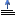

La possibilité d'activer directement la fenêtre Mdi du masque / dictionnaire concerné : choix Masque / Dictionnaire du menu Fenêtres (raccourci clavier Ctrl+T) ou bouton

.Remarque : il est également possible, à partir de la fenêtre Mdi du masque / dictionnaire concerné, d'activer directement à la fenêtre Mdi des traitements : choix Traitements du masque / dictionnaire du menu Fenêtres (raccourci clavier Ctrl+T) ou bouton
Lorsque le masque / dictionnaire concerné est un masque / dictionnaire de surcharge, il est enfin possible d'activer directement la fenêtre Mdi du source des traitements de surcharge à partir de la fenêtre Mdi du source des traitements de base et réciproquement : choix Traitements Base <-> Surcharge du menu Fenêtres (raccourci clavier Maj+Ctrl+T) ou bouton
La présence de l'onglet vertical Arbre des traitements.